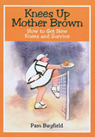

Knees Up Mother BrownHow to Get New Knees and Survive

DO YOU NEED NEW KNEES? WANT TO KNOW MORE? Paperback has now sold out. Available on Amazon: Buy it now Read Pam Bayfield's book Knees Up Mother Brown - How To Get New Knees and Survive. In this book Pam takes you through the first 12 month's journey of rehabilitation as seen through her eyes. She had a bilateral knee replacement in July 2004 and kept a diary to record the whole process. There are also letters from other knee recipients who tell of their experiences. The experiences of someone who has had a bilateral knee replacement operation are recorded in a book titled Knees Up Mother Brown or How to Get New Knees and Survive, by northern beaches resident Pam Bayfield. Mrs Bayfield said she hoped the book would help people who had had the operation or were about to have it. The book covers the first 12 months of her rehabilitation, as she kept a diary to record her progress. The book also contains letters from other bilateral patients telling of their experiences.
sold out
|
|